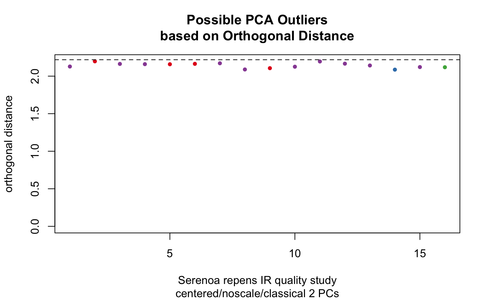

A function to carry diagnostics on the PCA results for a
Spectra object. Basically a wrapper to Filzmoser's
pcaDiagplot which colors everything according to
the scheme stored in the Spectra object. Works with PCA
results of either class prcomp or class princomp. Works
with either classical or robust PCA results.
pcaDiag(spectra, pca, pcs = 3, quantile = 0.975, plot = c("OD", "SD"), use.sym = FALSE, ...)
Arguments
| spectra | An object of S3 class |
|---|---|
| pca | An object of class |
| pcs | As per |
| quantile | As per |
| plot | A character string, indicating whether to plot the score
distances or orthogonal distances, or both. Options are |
| use.sym | logical; if true, the color scheme is change to black and symbols are used for plotting. |
| … | Additional parameters to be passed to the plotting functions. |
Value
A list is returned as described in
pcaDiagplot, so the result must be assigned or
it will appear at the console. Side effect is a plot.
Details
If both plots are desired, the output should be directed to a file rather
than the screen. Otherwise, the 2nd plot overwrites the 1st in the active
graphics window. Alternatively, just call the function twice, once
specifying OD and once specifying SD.
References
K. Varmuza and P. Filzmoser Introduction to Multivariate Statistical Analysis in Chemometrics, CRC Press, 2009.
See also
Additional documentation at https://bryanhanson.github.io/ChemoSpec/
pcaDiagplot in package
chemometrics for the underlying function.
Examples
data(SrE.IR) res <- c_pcaSpectra(SrE.IR, choice = "noscale") temp <- pcaDiag(SrE.IR, res, pcs = 2, plot = "OD")temp <- pcaDiag(SrE.IR, res, pcs = 2, plot = "SD")